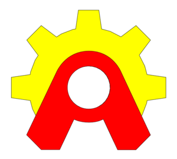
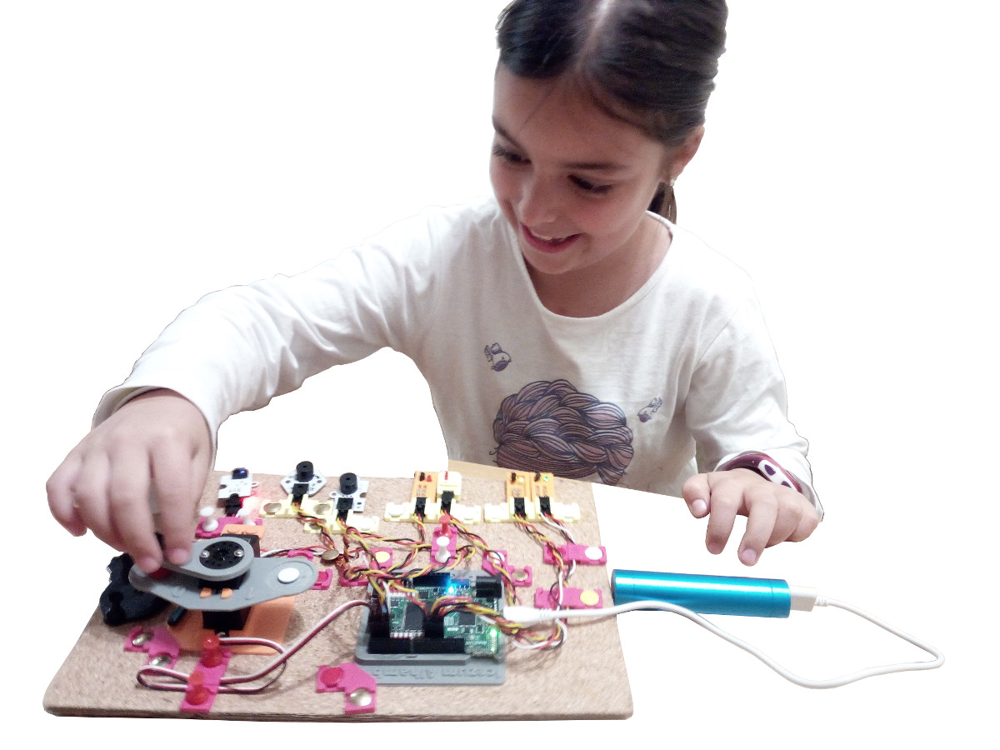
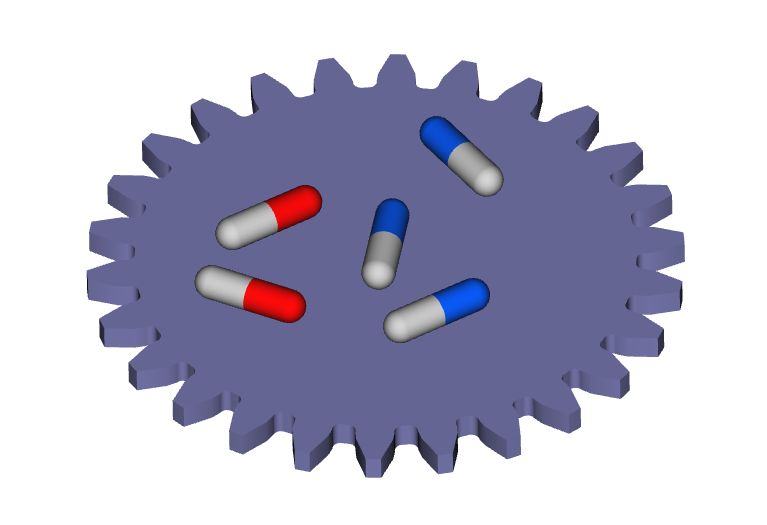
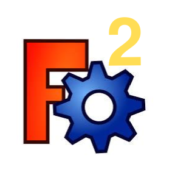
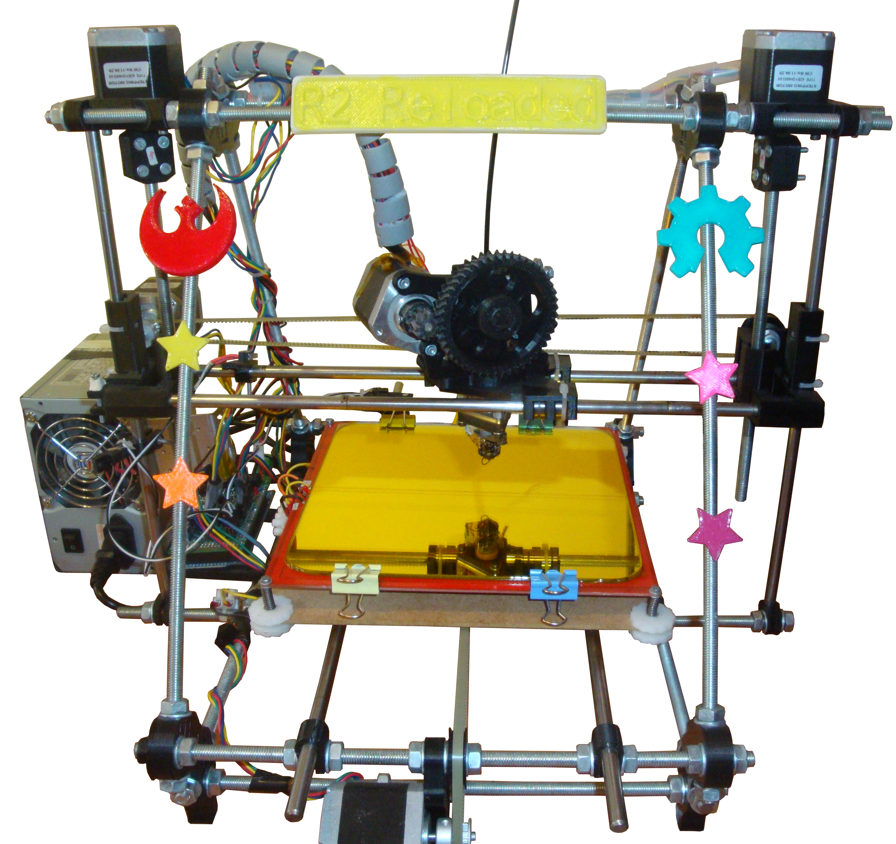
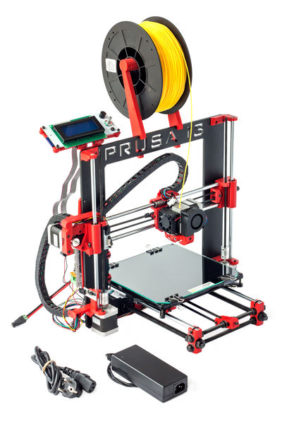

Obijuan Academy: Tu academia Rebelde ;-)
Contenido
[ocultar]Introducción
Bienvenido a la Obijuan Academy. Aquí se irán publicando tutoriales prácticos sobre diversos temas, con una licencia libre. El objetivo es difundir el conocimiento libre, usando exclusivamente herramientas libres.
FPGAs
Tutorial de Electrónica Digital para makers con FPGAs Libres
|  |
Tutorial de Electrónica Digital para makers con FPGAs Libres Aprende electrónica digital de una manera divertida |
Diseño digital para FPGA, con herramientas libres: Verilog y ICEstorm
| |
Diseño digital para FPGA, con herramientas libres Wikitutorial. Aprende a sintetizar hardware usando solamente herramientas libres |
VídeoBlogs
VideoBlog: Píldoras de conocimiento
|  |
Videoblog Píldoras de conocimiento variadas |
Diseño 3D
Tutoriales Freecad
| |
Tutorial: Diseño de piezas con Freecad Empezando a diseñar piezas 3D con Freecad Temporada 1 |
|  |
Tutorial: Diseño de piezas con Freecad. Temporada 2 Temporada 2 |
Tutoriales Openscad
| |
Diseño de piezas con OpenScad Empezando a diseñar piezas 3D con OpenScad Temporada 1 |
| |
Diseño de piezas con OpenScad II Continuación del Tutorial de openscad Temporada 2 |
Github
Tutoriales Github
| |
Tutorial: Github y Freecad: Aprendiendo a contribuir Incrementa las piezas 3D del patrimonio tecnológico de la humanidad |
Impresoras 3D Libres
Tutoriales montaje Prusa i2
| |
Guia de montaje de la Prusa 2 Aprende a construir tu impresora 3D opensource Fecha: 29/Ago/2012 |
|  |
Evolucionando la Prusa 2 Continuación del Tutorial de la Prusa 2. ¡Vamos a mejorarla! |
Futuros
|  |
Tutorial: Montaje de la Prusa i3 Aprende a construir la Prusa i3 |
Autor
- Juan González Gómez (Obijuan)
Licencia
| |
Enlaces
Noticias
- 20/Nov/2015: Publicado tutorial sobre diseño digital en FPGA usando herramientas libres. Es un tutorial ESCRITO (no hay vídeos) y es el primero que se encuentra en la wiki de Github. Es muy probable que los siguientes tutoriales se hagan en esa wiki
- 30/Julio/2015: Terminada la temporada 2 de tutoriales de Freecad
- 17/Abril/2015: ¡Comenzamos la segunda temporada de los tutoriales de Freecad!
- 6/Marzo/2015: Terminados los tutoriales de Github y Freecad
- 14/Julio/2014: Añadida la Temporada I del tutorial de Freecad
- 2/Abril/2014: Comenzados los tutoriales de Freecad. Temporada 1
- 30/Marzo/2014: Añadida la segunda temporada del tutorial de openscad
- 3/Sep/2012: Añadidos los dos primeros tutoriales: Guía de montaje de la Prusa y Openscad
- 24/Ago/2012: Comenzada esta página